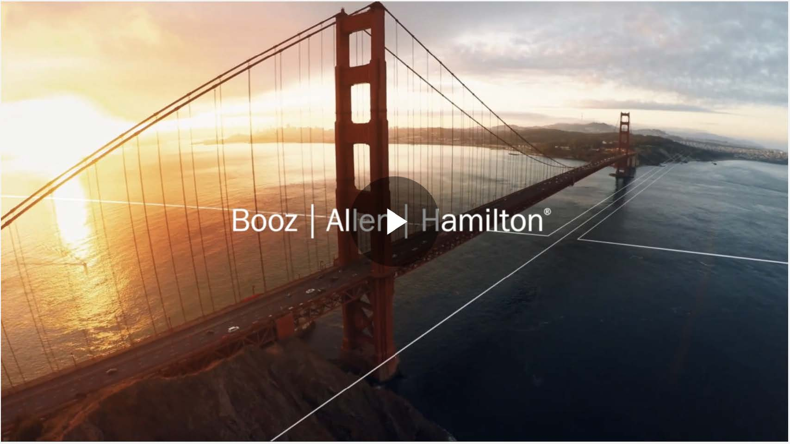
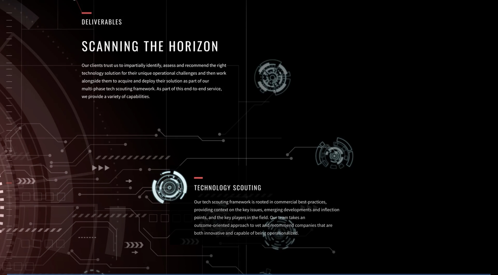
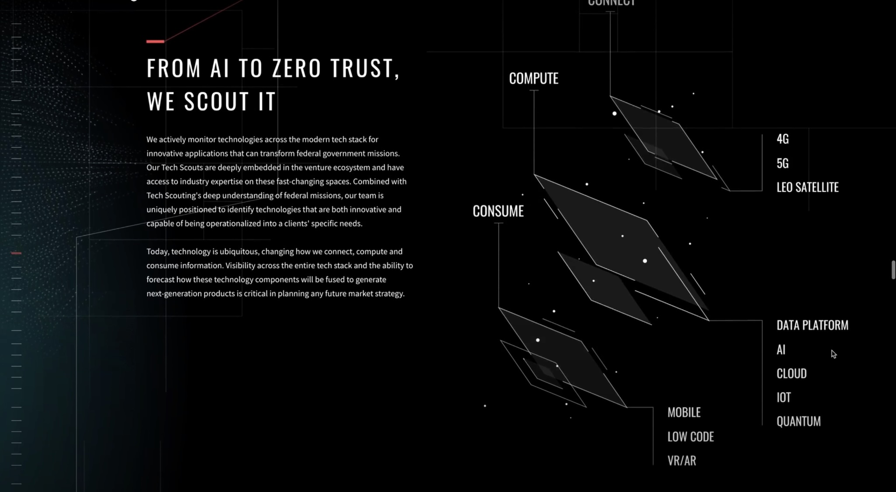
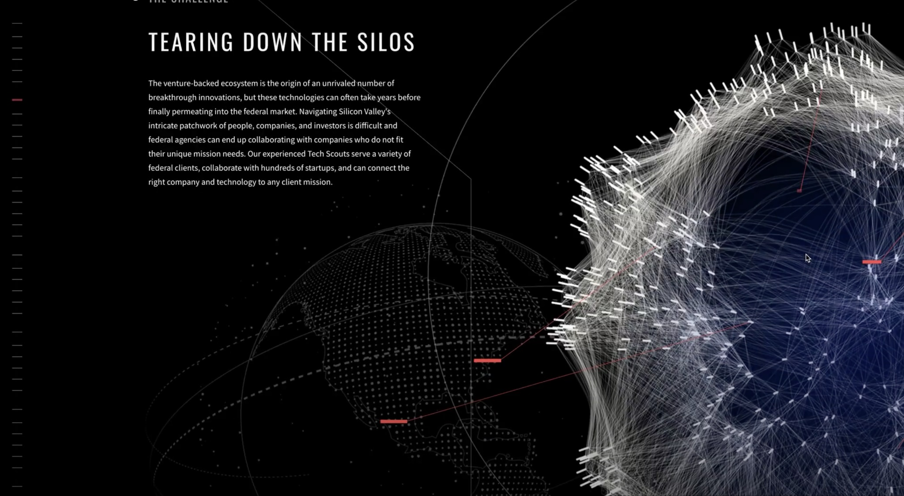
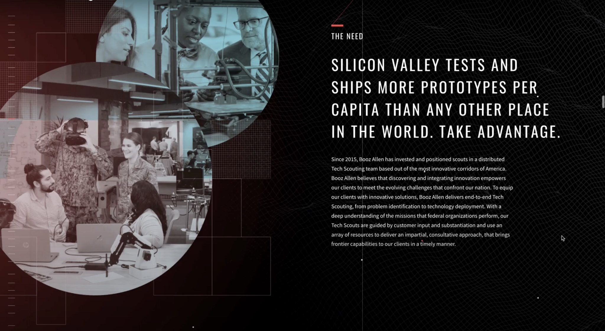
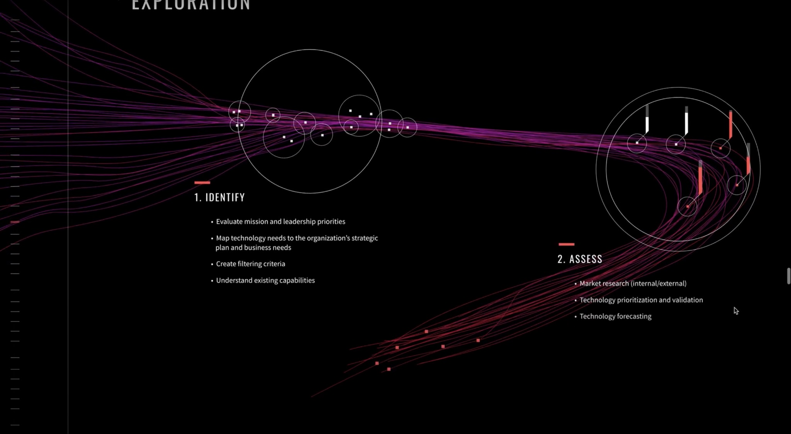

In the midst of the COVID-19 pandemic, Booz Allen Hamilton wanted to showcase Tech Scouting, their newest capability. The challenge was to create a video and internal website that helped people understand the value tech startups could bring to major government clients. The team is a nationwide network of engineers, business leaders, and venture capitalists, trained to bring powerful startups into the government to solve their greatest challenges.



The creative strategy was to visually see the nationwide network that connects Washington, DC to Silicon Valley. Throughout the video, there are various lines bringing the technology across the country back to the government's most important missions. The goal was to make the video exciting but not overwhelming or out of reach.



The website was a scrolling single page internal site that needed to follow Booz Allen's branding guidelines. A core feature of their brand is to include people as often as possible. The sample pages showcase how we integrated this principle throughout the design while maintaining a clean, modern aesthetic that highlights the innovative nature of the Tech Scouting program.